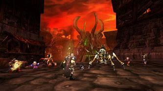

VIDEOJUEGOS Y SUS DIFERENTES IMPLICACIONES
- Culturales
- Sociales
- Salud
- Nivel profesional
Cultural
Los videojuegos han tenido un gran impacto en la
cultura gracias a que han revolucionado cosas como
la narración de historias, las bandas sonoras y
apartados artísticos. Sumado a ello, han logrado unir a comunidades debido a un
interés común como el WoW donde se unen para realizar mazmorras.


A nivel profesional
Los videojuegos, a pesar de la creencia popular, tienen un gran mercado a nivel competitivo
con torneos de millones de dólares y de gran renombre como los
Esports y equipos como Heretics. Sin embargo, no es un ámbito
fácil de competir ya que se necesita gran habilidad y muchas horas de juego, lo cual
puede llegar a estresar a muchos jugadores haciendo que se retiren del mundo profesional
rápidamente ya que acaban quemando sus ganas de jugar.


Sociales
A pesar de los estereotipos clásicos, los videojuegos ayudan enormemente a la capacidad para socializar ya que requieren una cooperación y coordinación con otras personas.